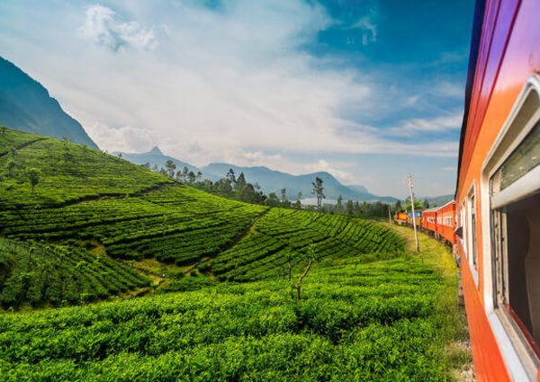
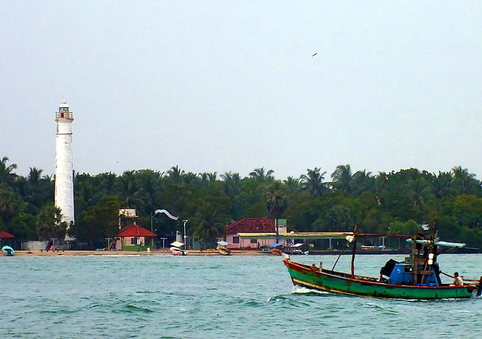
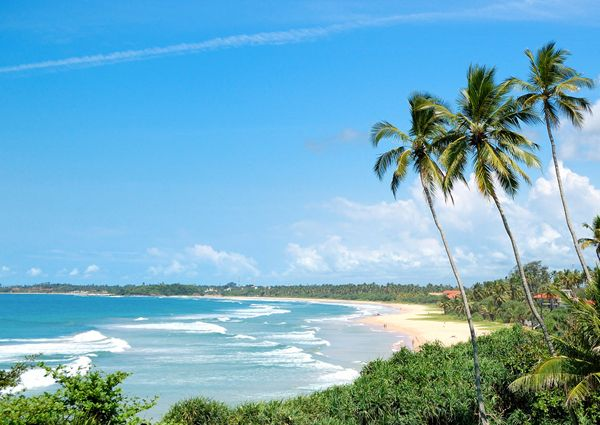
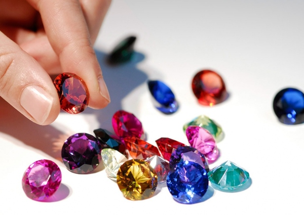
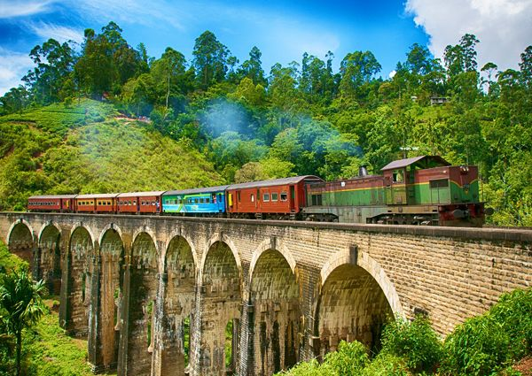
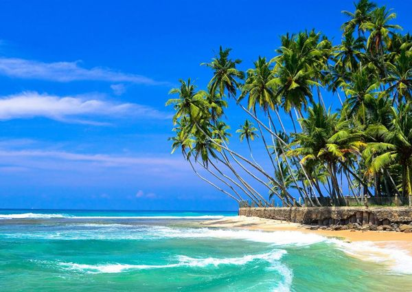

/* Designed & coded by Sandra Ashipala <https://github.com/sandramsc> */
<!DOCTYPE html>
<html lang="en">
  <head>
    <meta charset="UTF-8" />
    <meta name="viewport" content="width=device-width, initial-scale=1.0" />
    <link rel="stylesheet" href="css/style.css" />
    <title>JustSmile Photography</title>
  </head>
  <body>
    <!--Landing Area-->
    <main>
      <div id="landing">
        <div id="landing-text">
          <div id="landing-text-inner">
            <h1>JustSmile Photography</h1>
            <h2>Sri Lanka The Pearl of the Indian Ocean</h2>
            <a href="#images" class="btn" id="view-photos">View Photos</a>
          </div>
        </div>
        <div id="landing-image"></div>
      </div>

      <div id="images">
        <div id="header">
          <h2>| Photos |</h2>
          
          <div class="caption">
            <h3>Badulla</h3>
            <p>
              Badulla is the main city of Uva Province situated in the lower
              central hills of Sri Lanka.
            </p>
          </div>

          
          <div class="caption">
            <h3>Batticaloa</h3>
            <p>
              Batticaloa is a major city in the Eastern Province, Sri Lanka, and
              its former capital. It is the administrative capital of the
              Batticaloa District.
            </p>
          </div>

          
          <div class="caption">
            <h3>Bentota</h3>
            <p>
              Bentota is a coastal town in Sri Lanka, located in the Galle
              District of the Southern Province, governed by an Urban Council.
            </p>
          </div>

          
          <div class="caption">
            <h3>Sri Lankan Gems</h3>
            <p>
              It has been estimated that nearly 25% of the total land area of
              Sri Lanka is potentially gem-bearing, making Sri Lanka one of the
              countries with the highest density of gem deposits
            </p>
          </div>

          
          <div class="caption">
            <h3>Ella</h3>
            <p>
              Ella is a small town in the Badulla District of Uva Province, Sri
              Lanka governed by an Urban Council. It is approximately 200
              kilometres (120 mi) east of Colombo.
            </p>
          </div>

          
          <div class="caption">
            <h3>Hikkaduwa</h3>
            <p>
              Hikkaduwa is a small town on the south coast of Sri Lanka located
              in the Southern Province.
            </p>
          </div>

          
          <div class="caption">
            <h3>Colombo</h3>
            <p>
              Colombo is the commercial capital and largest city of Sri Lanka by
              population.
            </p>
          </div>
        </div>
      </div>
    </main>

    <footer>
      <h3>Contact Details</h3>
      <p>Email or call for a quotation</p>
      <p>Email: <strong>contact@justsmile.org</strong></p>
      <p>Phone: <strong>(+49) 554 55656</strong></p>
    </footer>

    <script
      src="https://code.jquery.com/jquery-3.5.1.min.js"
      integrity="sha256-9/aliU8dGd2tb6OSsuzixeV4y/faTqgFtohetphbbj0="
      crossorigin="anonymous"
    ></script>
    <script src="js/main.js"></script>
  </body>
</html>
